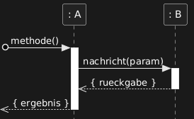
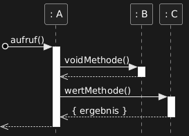
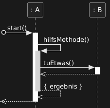
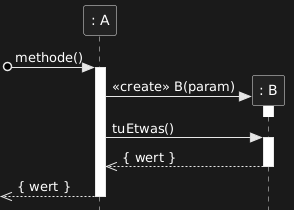
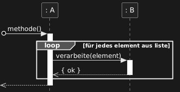
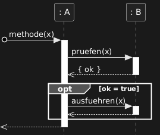
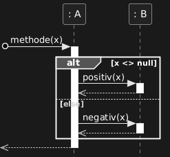
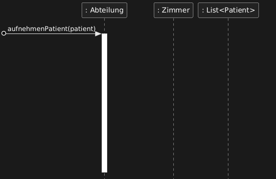
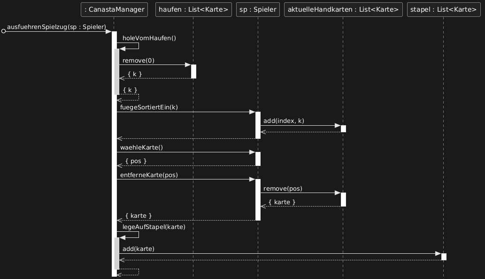
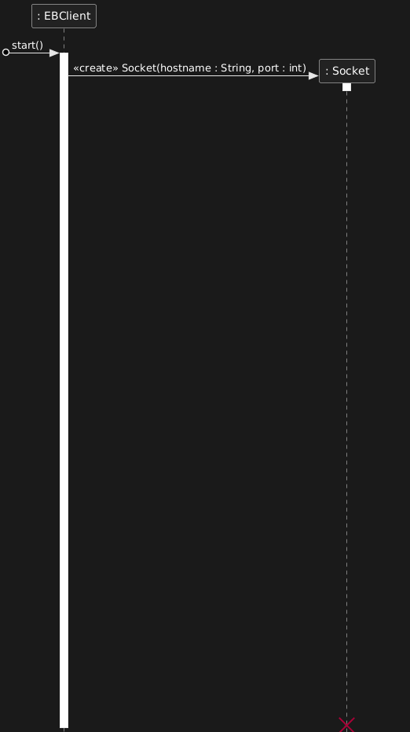

⚠ Hinweis zur Datenqualität:
Die Daten dieser Statistik wurden mithilfe von KI analysiert und ausgewertet. Die Seite selbst wurde größtenteils von KI erstellt. Trotz sorgfältiger Prüfung können einzelne Einträge fehlerhaft oder unvollständig sein. Im Zweifelsfall mit den offiziellen Prüfungsunterlagen überprüfen.
UML-Sequenzdiagramme zeichnen: Der Abitur-Leitfaden
Von null auf Abitur-Standard — alle Notationselemente, Zeichenregeln und
Lösungsstrategien, die du für die OOP-Sequenzdiagramm-Aufgaben in der
Praktischen Informatik (Hessen) brauchst. Abgeleitet aus den offiziellen
Abitur-Lösungen 2022–2025.
ABI 2022 BABI 2023 BABI 2023 CABI 2025 A
1 · Was ist ein UML-Sequenzdiagramm?
Grundlage — Wozu dient ein Sequenzdiagramm?
In der objektorientierten Programmierung (OOP) besteht ein Programm aus mehreren Objekten, die miteinander kommunizieren — indem sie gegenseitig Methoden aufrufen. Ein UML-Sequenzdiagramm macht genau diese Kommunikation sichtbar: Es zeigt, wer wen anruft, welche Methode aufgerufen wird und — ganz wichtig — in welcher Reihenfolge das alles passiert. Die Zeit läuft dabei immer von oben nach unten.
Stell dir vor, ein Arzt nimmt einen neuen Patienten in eine Abteilung auf. Intern passiert dabei einiges: Die Abteilung fragt jedes ihrer Zimmer, ob es noch frei ist. Ein freies Zimmer fügt den Patienten zu seiner Patientenliste hinzu und meldet zurück, ob das geklappt hat. Diesen gesamten Ablauf — wer mit wem spricht und in welcher Reihenfolge — visualisiert ein Sequenzdiagramm.
Kernidee
Ein Sequenzdiagramm beschreibt den internen Ablauf genau einer Methode — nämlich der Methode, die in der Aufgabe genannt wird. Horizontale Pfeile von links nach rechts sind Methodenaufrufe. Die Zeit läuft wie bereits erwähnt von oben nach unten.
Im Abitur Hessen
Du bekommst immer eine Vorlage (Zeichenvorlage in Material X), die bereits alle (anfangs) beteiligten Objekte eingezeichnet und den ersten Aufruf der Methode angedeutet hat. Deine Aufgabe: Die Vorlage per Hand vervollständigen, indem du Pfeile, Aktivierungsbalken und Fragmente ergänzt.
Bewertung: Typisch 7–10 Bewertungseinheiten (BE) pro Aufgabe. Da Sequenzdiagramme in den meisten Vorschlägen der letzten 10 Jahre vorkamen, lohnt es sich, diese Aufgabe sicher zu beherrschen.
2 · Grundelemente auf einen Blick
Alle Notationselemente, die du kennen musst — auf einen Blick.
[ ] + ┆ LebenslinieTeilnehmer (Objekt)
Ein Rechteck oben repräsentiert ein Objekt. Darunter hängt eine gestrichelte senkrechte Linie — die Lebenslinie. Der Name steht in der Form : Klasse (anonym) oder name : Klasse (benannt).
▐ Schmales RechteckAktivierungsbalken
Ein schmales Rechteck auf der Lebenslinie zeigt, dass das Objekt gerade aktiv ist (eine Methode ausführt). Er beginnt beim eingehenden Aufrufpfeil und endet, wenn der Rückgabepfeil gesendet wird. Da im Abitur eine Methode skizziert werden muss, ist dieses Objekt auch konstant aktiv.
————▶ Voller PfeilSynchroner Methodenaufruf
Ein durchgezogener Pfeil mit ausgefüllter dreieckiger Pfeilspitze von links nach rechts. Beschriftung: methode(parameter). Das aufrufende Objekt wartet, bis die Methode zurückkehrt.
﹤ - - - Gestrichelter PfeilRückgabepfeil
Zeigt die Rückgabe einer Methode an — immer von rechts nach links. Wird im Abitur immer eingezeichnet, auch bei void. Bei einem Rückgabewert lautet die Beschriftung { wert }; bei void bleibt sie leer.
↩ Pfeil zu sich selbstSelbstaufruf
Wenn ein Objekt eine eigene Hilfsmethode aufruft, zeigt ein Pfeil zurück auf die eigene Lebenslinie. Der zweite Aktivierungsbalken liegt leicht rechts versetzt auf derselben Lebenslinie.
————▶ «create»Objekt erstellen
Ein Pfeil mit dem Stereotyp «create» und dem Konstruktoraufruf zeigt auf ein neu erstelltes Objektrechteck. Das neue Objekt erscheint auf der Höhe des Pfeils, nicht oben. Diese Objekte sind oft nicht von Anfang an existent und müssen dann eigenständig eingezeichnet werden.
●——▶ StartpfeilInitialer Aufruf (von außen)
Ein Pfeil mit kleinem geschlossenen Kreis links am Rand signalisiert, dass die Methode von außen gestartet wird (z.B. durch das Hauptprogramm). Dieser Pfeil ist in jeder Vorlage bereits eingezeichnet.
﹤ - - - Rückgabe außenAbschließende Rückgabe
Am Ende der Methode zeigt ein gestrichelter Pfeil nach links aus dem Diagramm heraus. Bei einem Rückgabewert trägt er { wert }; bei void ist er unbeschriftet — er wird aber (besser) immer eingezeichnet.
┌─ loop / opt / alt ─┐Fragmente
Rechteckige Rahmen mit einem Schlüsselwort in der Ecke. loop = Schleife, opt = optionaler Block (nur wenn Bedingung gilt – if), alt = Fallunterscheidung (if/else). Mehr dazu in Abschnitt 4.
Alle Basis-Elemente auf einen Blick: Das folgende Diagramm zeigt ein einfaches, vollständiges Sequenzdiagramm mit initialer Anfrage, synchronem Aufruf, Rückgabepfeil und abschließender Rückgabe an den Aufrufer.
Beispiel
Grundelemente eines UML-Sequenzdiagramms

Von oben nach unten: Initialer Aufruf (Kreis-Pfeil von links), Aktivierungsbalken auf : A, synchroner Aufruf auf : B (ausgefüllte Dreieckspfeilspitze ▶), Rückgabepfeil (gestrichelt, mit { rueckgabe }), abschließende Rückgabe nach außen.
3 · Notation im Detail
Jedes Element genau erklärt — inklusive der Abitur-spezifischen Regeln.
3.1 Teilnehmer & Lebenslinien
Jedes Objekt, das an der Kommunikation beteiligt ist, wird als Teilnehmer dargestellt: ein Rechteck oben mit einem Namen, darunter eine gestrichelte senkrechte Linie. In der Vorlage sind alle Teilnehmer immer bereits vorgegeben — du musst keine eigenen erfinden (außer wenn die Aufgabe ausdrücklich ein neues Objekt verlangt, → Abschnitt 3.6).
Der Aktivierungsbalken (auch Ausführungsbalken) ist ein schmales, hohes Rechteck auf der Lebenslinie. Er zeigt an, dass das Objekt in diesem Zeitraum aktiv ist, also gerade eine Methode ausführt.
Beginn und Ende des Balkens
Der Balken beginnt, wenn der Aufrufpfeil eintrifft, und endet, wenn die Methode ihren Rückgabepfeil sendet. Bei einem Selbstaufruf entsteht ein zweiter, leicht nach rechts versetzter Balken auf derselben Lebenslinie — er stellt die innere Methode dar. Dem Stack ähnelnd, wer sich damit auskennt.
3.3 Synchroner Methodenaufruf
Alle Methodenaufrufe im Abitur sind synchron — das aufrufende Objekt wartet, bis die aufgerufene Methode beendet ist. Dargestellt wird das durch einen durchgezogenen Pfeil mit ausgefüllter, dreieckiger Pfeilspitze (▶) von links nach rechts.
⚠ Abitur-spezifische Pfeilspitze: Das Abitur Hessen verwendet eine ausgefüllte dreieckige Pfeilspitze für synchrone Aufrufe — nicht den üblichen einfachen Pfeil (→). Achte beim Handzeichnen darauf, die Spitze als solides, ausgefülltes Dreieck zu zeichnen, nicht als offene Kontur.
Beschriftung
Bedeutung
Beispiel
methode()
Aufruf ohne Parameter
istVoll(), waehleKarte()
methode(param)
Aufruf mit einem Parameter
belegen(patient), add(karte)
methode(p1, p2)
Mehrere Parameter
anfragenBereitschaft(f, von, nach)
methode(p : Typ)
Typisierter Parameter (optional)
Socket(hostname : String, port : int)
3.4 Rückgabepfeil — immer einzeichnen!
⚠ Wichtige Abitur-Pflicht-Regel: In allen offiziellen Abitur-Musterlösungen (Hessen) wird nach jedem einzelnen Methodenaufruf ein Rückgabepfeil eingezeichnet — auch wenn die Methode void ist und gar keinen Wert zurückgibt. Lass diesen Pfeil niemals weg.
Situation
Beschriftung des Pfeils
Beispiel aus Abitur
Void — kein Rückgabewert
kein Text, Pfeil bleibt leer
Nach add(patient), write(...)
Kurze Rückgabevariable
{ wert }
{ ok }, { k }, { pos }, { belegt }
Rückgabevariable mit Typ
{ wert : Typ }
{ ok : boolean }, { k : Konto }
Aussagekräftiger Variablenname
{ variablenname }
{ taxiListe }, { karte }, { daten : String }
Pflicht
Rückgabepfeil — void vs. mit Rückgabewert

Oben: Void-Methode — gestrichelter Pfeil ohne Beschriftung (trotzdem Pflicht!).
Unten: Methode mit Rückgabewert — Beschriftung in geschweiften Klammern { ergebnis }.
3.5 Selbstaufruf (Self-Call)
Wenn ein Objekt eine eigene Hilfsmethode aufruft, zeichnet man einen Pfeil, der vom Aktivierungsbalken des Objekts ausgeht und wieder auf ihn zurückzeigt. Ein zweiter, leicht nach rechts versetzter Aktivierungsbalken repräsentiert die aufgerufene Hilfsmethode.
Selbstaufrufe kommen im Abitur häufig vor, wenn eine Klasse komplexere Logik in private Hilfsmethoden auslagert.
Notation
Selbstaufruf

Objekt : A ruft seine eigene Methode hilfsMethode() auf. Der Pfeil kehrt auf einen zweiten, leicht rechts versetzten Aktivierungsbalken zurück. Der Rückgabepfeil der Hilfsmethode ist ebenfalls Pflicht.
3.6 Neues Objekt erstellen («create»)
Manchmal muss im Verlauf einer Methode ein komplett neues Objekt erstellt werden, das vorher nicht existierte. Das neue Objekt wird als neues Rechteck auf seiner eigenen Lebenslinie eingezeichnet — auf der Höhe, auf der es erstellt wird, nicht ganz oben. Der Konstruktoraufruf wird durch einen Pfeil mit dem Stereotyp «create» dargestellt.
Wann ist das nötig?
Eher selten, aber es kommt vor. Die Aufgabenstellung macht es klar — durch Formulierungen wie „wird eine neue Vorstellung erzeugt", „erstellt schließlich den Lieferauftrag" oder „erzeugt ein Socket-Objekt". Wenn ein Objekt nicht in der Vorlage vorhanden ist, die Methode es aber laut Aufgabe erstellt, musst du es vollständig mit Rechteck und Lebenslinie einzeichnen.
Kleiner Aktivierungsbalken direkt nach der Erstellung
In den offiziellen Abitur-Musterlösungen erhält ein neu erstelltes Objekt direkt nach der Erstellung einen kurzen Aktivierungsbalken, auch wenn es in diesem Moment noch keine weitere Methode ausführt. Dieser kurze Balken steht symbolisch für die Konstruktorausführung. Zeichne ihn immer ein.
Notation
Neues Objekt erstellen mit «create»

Objekt : A erstellt ein neues : B mit «create» B(param). Das Objektrechteck erscheint auf der Höhe des Pfeils. Der kleine Aktivierungsbalken danach ist Pflicht laut Abitur-Musterlösung.
3.7 Destruktionsmarkierung (X)
In sehr seltenen Fällen wird das Ende der Lebenslinie eines Objekts mit einem X markiert, das anzeigt, dass das Objekt zerstört wurde — beispielweise nach einem close()-Aufruf. Du musst dieses X nur dann selbst einzeichnen, wenn die Aufgabe es explizit verlangt, zum Beispiel durch die Formulierung „Schließlich wird das Objekt geschlossen." In allen anderen Fällen ist die Destruktionsmarkierung nicht erforderlich. Jedoch war dies nur ein einzelnes Mal in den letzten 10 Jahren nötig (2016 A).
4 · Fragmente — Schleifen und Bedingungen
Mit Fragmenten stellst du Wiederholungen und bedingte Ausführung dar.
Wenn ein Teil des Ablaufs wiederholt oder nur unter bestimmten Bedingungen ausgeführt wird, verwendet man kombinierte Fragmente. Ein Fragment ist ein rechteckiger Rahmen, der die betroffenen Nachrichten einschließt. In der oberen linken Ecke steht das Schlüsselwort (loop, opt oder alt), danach folgt die Bedingung in eckigen Klammern.
4.1 loop — Wiederholung
loop [Bedingung] — alles im Rahmen wird wiederholt
Die Bedingung ist frei formulierbar, solange sie verständlich ist. Aus dem Abitur bekannte Formulierungen:
loop [für jedes zimmer aus zimmerListe] loop [für jedes taxi aus taxis und Auftrag nicht vergeben] loop [true] — Endlosschleife loop [anforderung <> "quit"] — <> bedeutet das selbe wie !=, also ungleich
Fragment
loop — Wiederholung

Alle Methodenaufrufe innerhalb des loop-Rahmens werden für jedes Element der Liste wiederholt. Der Rahmen zeigt klar die Grenzen der Schleife.
4.2 opt — Optionaler Block
opt [Bedingung] — wird nur ausgeführt, wenn Bedingung wahr ist
Der gesamte Inhalt des Fragments wird übersprungen, wenn die Bedingung nicht gilt. Es gibt keinen else-Zweig — das ist der Unterschied zu alt. Aus dem Abitur:
opt [belegt = false] opt [ok = true] opt [antwort = "+OK..."] — Das bedeutet antwort soll mit "+OK" beginnen (antwort.StartsWith("+OK"))
Fragment
opt — Optionaler Block

Nur wenn ok = true gilt, wird der enthaltene Block ausgeführt. Kein else-Zweig — entweder der Block läuft, oder er wird komplett übersprungen.
4.3 alt — Fallunterscheidung (if/else)
alt [Bedingung] / else — echte Verzweigung mit zwei Zweigen
Das alt-Fragment zeigt eine Fallunterscheidung: Genau einer der Zweige wird ausgeführt. Die Zweige sind durch eine gestrichelte Trennlinie getrennt. Der else-Zweig ist im Abitur oft einfach nur mit „else" beschriftet. Aus dem Abitur:
alt [k <> null] / [else] alt [ok = true] / [else]
Man kann jedoch auch beispielweise alt [code = 1] / [code = 2] / [else] damit darstellen. Dann hat man mehrere else-Zweige (else-if).
Fragment
alt — Fallunterscheidung

Zwei Zweige, getrennt durch eine gestrichelte Linie. Nur einer wird ausgeführt. Im Abitur ist der else-Zweig oft mit „else" beschriftet, da meistens nur ein gewöhnlicher bool für die Bedingung verwendet wird.
Schachtelung von Fragmenten: Im Abitur kommen Fragmente häufig ineinandergeschachtelt vor — z.B. ein opt innerhalb eines loop, oder ein alt innerhalb eines loop innerhalb eines opt. Das ist vollkommen normal und spiegelt die tatsächliche Programmlogik wider. Plane vor dem Zeichnen, wie viel Platz jedes Fragment auf dem Blatt benötigt.
5 · Die Vorlage (Zeichenvorlage) verstehen
Was dir die Vorlage bereits gibt — und was du selbst ergänzen musst.
In jedem Abitur-Vorschlag der letzten 10 Jahre war eine Zeichenvorlage gegeben — du zeichnest nie auf einem leeren Blatt. Die Vorlage (im Material als „Material X" bezeichnet) liefert dir immer Folgendes:
Was die Vorlage immer enthält:
1. Alle Teilnehmer (Objekte): Sämtliche Objekte, die du im Diagramm verwenden sollst, sind als Rechtecke mit Lebenslinien bereits eingezeichnet. Du erfindest keine neuen Teilnehmer — außer wenn die Aufgabe explizit ein neues Objekt verlangt (→ Abschnitt 3.6) und musst immer alle mindestens einmal aktivieren (benutzen).
2. Den initialen Aufruf: Der erste Pfeil von außen — also der Aufruf der Methode, um die es geht — ist bereits eingezeichnet (Pfeil mit dem kleinen Kreis von links). Meistens beginnt auch der erste Aktivierungsbalken bereits.
3. Manchmal mehr: In manchen Vorlagen sind bereits ein oder zwei weitere Schritte vorgegeben, z.B. ein Selbstaufruf der ersten Methode (wie in ABI 2023 B). Das könnte dir helfen einen Ansatz zu bilden, falls du dir nicht sicher bist, was die Aufgabe von dir will.
Was du selbst ergänzen musst:
Alle weiteren Methodenaufrufe, Rückgabepfeile, Aktivierungsbalken und Fragmente. Du zeichnest direkt auf die gedruckte Vorlage, du kopierst sie nicht. Wenn du einen Fehler gemacht hast und alles nochmal neu zeichnen willst, musst du auf einem neuen, leeren Blatt bei der Vorlage beginnen.
Teilnehmer-Namen genau lesen! Die Namen in der Vorlage sind kein Zufall. Ein Teilnehmer namens haufen : List<Karte> zeigt dir: Es gibt eine spezifische Liste (den Haufen), auf der du Methoden wie remove(0) aufrufen sollst. Ein Teilnehmer stapel : List<Karte> ist eine andere Liste — der Stapel. Beide existieren separat, obwohl sie vom selben Typ sind. Achte hierbei dann ausdrücklich darauf, welche Liste zu welchem Objekt gehört.
Vorlage
Typische Zeichenvorlage — ABI 2025 A

Drei Teilnehmer sind bereits eingezeichnet: : Abteilung, : Zimmer und : List<Patient>. Der initiale Aufruf aufnehmenPatient(patient) und der Aktivierungsbalken des Abteilung-Objekts sind vorgegeben. Alles weitere muss der Schüler selbst ergänzen. Überprüfe auch sofort im Klassendiagramm, ob die Methoden einen Rückgabewert hat.
6 · Aufgabentypen — Wie viel wird dir erklärt?
Zwei grundlegende Arten von Sequenzdiagramm-Aufgaben im Abitur.
Nicht jede Aufgabe erklärt dir gleich viel darüber, was die Methode eigentlich tut. Es gibt zwei Grundszenarien:
6.1 Typ A — Die Methode ist beschrieben
Die Aufgabe erklärt dir Schritt für Schritt, was die Methode tut.
Im Aufgabentext findest du einen detaillierten Ablauf, z.B. „sucht nach freien Taxis … fragt beim Fahrer an … vergebe Auftrag". Deine Aufgabe ist es, diesen Ablauf Schritt für Schritt in Pfeilnotation zu übersetzen. Du musst noch die richtigen Methoden aus dem Klassendiagramm zuordnen, aber der "Was passiert wann-Teil" ist gegeben.
Beispiel — ABI 2023 B (Typ A)
„Die Methode bearbeiteAuftrag() der Klasse TaxiZentrale sucht nach freien Taxis, die sich zur angefragten Zeit am nächsten an der Startadresse befinden. Für die ermittelten Taxis wird beim Fahrer angefragt, ob er bereit ist für die Annahme des Auftrags. Signalisiert der Fahrer seine Bereitschaft, wird der Auftrag an ihn vergeben. Konnte ein Taxi ermittelt werden, gibt die Methode true zurück, ansonsten false."
8 BE
6.2 Typ B — Die Methode muss erschlossen werden
Die Aufgabe nennt nur den Methodennamen — du leitest den Ablauf selbst her.
Hier steht in der Aufgabe nur sinngemäß: „Entwickeln und zeichnen Sie ein Sequenzdiagramm für die Methode aufnehmenPatient()." Was die Methode intern tut, musst du vollständig selbst herleiten. Dabei helfen dir vier Quellen:
1. Der Methodenname:aufnehmenPatient() → einen Patienten zuweisen. 2. Die Teilnehmer in der Vorlage:: Zimmer und : List<Patient> vorhanden → einem Patienten ein Zimmer zuweisen und da das Zimmer Patienten enthält, die Patienten-Liste des Zimmers mit dem Patienten befüllen. 3. Das Klassendiagramm: Welche Methoden hat Zimmer? → belegen(patient), istVoll(). 4. Die Assoziationen: Welche Klassen kennen welche? → bestimmt, wer wen anrufen darf – Abteilung und Zimmer kennen Patient. Also Patient aus dem Parameter in die Patienten-Liste der Klasse Zimmer zuweisen.
Beispiel — ABI 2025 A (Typ B)
„Die Methode aufnehmenPatient(patient : Patient) der Klasse Abteilung nimmt einen neuen Patienten in der Abteilung auf, sofern ein freies Zimmer gefunden wurde. Entwickeln und zeichnen Sie ein Sequenzdiagramm für diese Methode."
7 BE
Tipp für Typ B: Denk aus der Perspektive der Methode heraus: Was muss sie tun, damit ihr Name Sinn ergibt? Kombiniere den Methodennamen mit dem, was die Vorlage dir zeigt (welche Objekte gibt es?) und dem, was das Klassendiagramm verrät (welche Methoden haben diese Objekte?). Meist ist der Ablauf damit eindeutig erschließbar.
7 · Schritt-für-Schritt-Vorgehen
So gehst du systematisch vor, wenn du eine Sequenzdiagramm-Aufgabe löst.
Vorlage analysieren. Notiere alle Teilnehmer und ihre Klassen. Welche Methoden haben diese Klassen laut Klassendiagramm? Welche Assoziationen bestehen (wer kennt wen)?
Aufgabentext auswerten. Ist die Methode beschrieben (Typ A) oder nur benannt (Typ B)? Bei Typ A: Markiere alle Handlungsschritte im Text. Bei Typ B: Leite den Ablauf aus Methodenname, Vorlage und Klassendiagramm ab.
Ablauf in Teilschritte aufteilen. Ordne jedem Schritt den richtigen Teilnehmer und die richtige Methode zu: Wer ruft wen auf? Welche Methode mit welchen Parametern? Gibt die Methode etwas zurück, und wenn ja was?
Fragmente identifizieren. Gibt es Schleifen (loop) oder Bedingungen (opt, alt)? Erkennungsworte: „für jedes …" → loop; „sofern …", „falls …" → opt oder alt; „… ansonsten …" → alt.
Platz einteilen. Plane vor dem Zeichnen grob, wie viel Platz du für jeden Abschnitt brauchst — besonders bei verschachtelten Fragmenten. Das verhindert, dass du am Ende nicht mehr genug Platz hast.
Von oben nach unten zeichnen. Beginne beim initialen Aufruf (bereits vorgegeben) und füge Schritt für Schritt hinzu: erst Aufrufpfeil, dann Aktivierungsbalken des Empfängers, dann ggf. Unteraufrufe, dann Rückgabepfeil.
Kontrollieren: Kein offener Balken. Am Ende prüfst du systematisch: Jeder Aktivierungsbalken muss mit einem Rückgabepfeil abschließen — auch void-Methoden. Kein Balken darf ohne Rückgabe enden.
Abschließende Rückgabe zeichnen. Ganz am Ende der Methode: Rückgabepfeil nach links aus dem Diagramm heraus, ggf. mit { wert } beschriftet. Auch bei void wird dieser Pfeil gezeichnet.
8 · Vollständige Beispiele aus dem Abitur
Vier echte Abituraufgaben — mit Vorlage, Analyse und Musterlösung.
ABI 2025 AaufnehmenPatient() · Klasse Abteilung7 BE
8.1.1 Aufgabenstellung
Aufgabe 1.7 — Typ B (Methode erschließen)
Die Methode aufnehmenPatient(patient : Patient) der Klasse Abteilung nimmt einen neuen Patienten in der Abteilung auf, sofern ein freies Zimmer gefunden wurde. Entwickeln und zeichnen Sie ein Sequenzdiagramm für diese Methode. Hinweis: Eine Vorlage ist in Material 4 zu finden.
8.1.2 Analyse — Was die Aufgabe nicht sagt, aber du weißt
Was sagt die Vorlage?
Drei Teilnehmer: : Abteilung, : Zimmer und : List<Patient>. → Die Methode interagiert mit Zimmer-Objekten und einer Patientenliste.
Was musst du selbst herleiten?
„Aufnehmen" bedeutet: Einem Patienten wird ein Zimmer zugewiesen. Aus dem Klassendiagramm: Zimmer hat - istVoll() : boolean (privat, nicht direkt aufrufbar) und + belegen(patient : Patient) : boolean (öffentlich, direkt aufrufbar), das ist wichtig, denn die istVoll()-Methode kann hier nicht vom Abteilungs-Objekt aufgerufen werden, hier muss man darauf kommen, dass belegen(patient : Patient) bereits diese Methode aufruft, was man auch einzeichnen muss. Da die Abteilung mehrere Zimmer hat, wird per Schleife (loop) über alle Zimmer iteriert. Für jedes Zimmer: Prüfe ob es voll ist (istVoll() → { belegt }). Ist es frei (opt belegt = false): Füge den Patienten zur Liste hinzu (add(patient)). Das Zimmer gibt dann zurück, ob die Aufnahme geklappt hat ({ ok }). Die Methode gibt dies am Ende als { ok : boolean } zurück, aufnehmenPatient() soll ja einen boolean zurückgeben.
8.1.3 Vorlage und Musterlösung
VorlageGegebene Vorlage
8.1.4 Aufschlüsselung der Lösung
loop für jedes zimmer aus zimmerListe
Die Abteilung hat mehrere Zimmer (Abteilung kennt mehrere '*' Zimmer, also hat sie eine Liste von Zimmern), daher wird über alle iteriert. Der loop-Rahmen umschließt alle Aufrufe, die pro Zimmer wiederholt werden.
Zimmer ruft sich selbst auf: istVoll()
Das Zimmer-Objekt überprüft mit einem Selbstaufruf (Zimmer → Zimmer: istVoll()), ob es noch freie Plätze hat. Das Ergebnis { belegt } wird als Rückgabepfeil zurück an sich selbst eingezeichnet — und dann weiter aufwärts an : Abteilung als Rückgabe von belegen().
opt belegt = false → Liste: add(patient)
Nur wenn das Zimmer nicht voll ist, wird der Patient der Liste hinzugefügt. Das opt-Fragment enthält den add()-Aufruf auf der Liste. Da add() void zurückgibt, ist der Rückgabepfeil leer (aber trotzdem einzuzeichnen!).
ABI 2023 CausfuehrenSpielzug() · Klasse CanastaManager8 BE
8.2.1 Aufgabenstellung
Aufgabe 1.3 — Typ A (detailliert beschrieben) — Selber die einzelnen Schritte farbig markiert
Die Methode ausfuehrenSpielzug(sp : Spieler) der Klasse CanastaManager zieht die oberste Karte vom Haufen (1. Position im Container haufen) und fügt sie sortiert in die Handkarten des Spielers ein. Dann wählt der Spieler eine Karte auf seiner Hand aus, die er ablegen möchte. Dazu wählt er den Index dieser Karte und entfernt sie somit von seiner Hand. Anschließend wird diese Karte als oberste auf den Stapel (stapel) abgelegt.
8.2.2 Analyse — Vier Hauptschritte
Schritt 1: Karte vom Haufen ziehen
Selbstaufruf: CanastaManager → CanastaManager: holeVomHaufen(). Im Innern: haufen.remove(0) (Listen sind 0-Indexed, das heißt sie beginnen bei 0, die 1. Position ist deshalb 0) → gibt die oberste Karte { k } zurück. Die Hilfsmethode gibt dann { k } zurück an den äußeren Aufruf. Merke: Zusatz Infos in Klammern sind oft sehr hilfreich!
Schritt 2: Karte sortiert einfügen
sp.fuegeSortiertEin(k) → Der Spieler ruft intern aktuelleHandkarten.add(index, k) auf. Beide Rückgabepfeile sind void (leer, aber Pflicht).
Schritt 3: Karte auswählen und entfernen
sp.waehleKarte() → gibt { pos } zurück. Danach: sp.entferneKarte(pos) → intern aktuelleHandkarten.remove(pos) → gibt { karte } zurück. Beides wird aufwärts weitergegeben.
Schritt 4: Karte auf den Stapel legen
Selbstaufruf: CanastaManager → CanastaManager: legeAufStapel(karte). Im Innern: stapel.add(karte). Void-Rückgaben auf beiden Ebenen.
✓ Musterlösung
ABI 2023 C — ausfuehrenSpielzug()

Zwei Selbstaufrufe (holeVomHaufen(), legeAufStapel()) mit je einem verschachtelten Listenaufruf im Innern. Alle Rückgabepfeile sind eingezeichnet — auch die leeren void-Rückgaben auf Listenebene. Kein Fragment benötigt (kein loop, kein opt).
ABI 2023 BbearbeiteAuftrag() · Klasse TaxiZentrale8 BE
8.3.1 Aufgabenstellung
Aufgabe 1.3.2 — Typ A (beschrieben, Vorlage bereits teilweise ausgefüllt)
Die Methode bearbeiteAuftrag(von : Adresse, nach : Adresse) der Klasse TaxiZentrale sucht nach freien Taxis, die sich zur angefragten Zeit am nächsten an der Startadresse befinden. Für die ermittelten Taxis wird beim Fahrer angefragt, ob er bereit ist für die Annahme des Auftrags. Signalisiert der Fahrer seine Bereitschaft, wird der Auftrag an ihn vergeben. Konnte ein Taxi ermittelt werden, gibt die Methode true zurück, ansonsten false.
8.3.2 Besonderheit: Teilweise vorgefertigte Vorlage
Bereits vorgefertigter Schritt: Die Vorlage für diese Aufgabe enthielt bereits den Selbstaufruf TaxiZentrale → TaxiZentrale: getTaxiSortiertNachStandort(von) inklusive Rückgabepfeil { taxiListe } als vorgezeichneten Bestandteil. Dieser Schritt war gegeben — du musstest ihn nicht selbst erfinden, nur fortsetzen. Das ist ein gutes Beispiel dafür, wie eine Vorlage dir schon einen Teil der Lösung verrät.
Dieser Selbstaufruf war bereits auf der Vorlage eingezeichnet — du übernimmst ihn unverändert und baust ab dort weiter.
loop — für jedes taxi, solange Auftrag nicht vergeben
Die Schleifenbedingung kombiniert zwei Teile: Die Iteration über die Liste und eine Abbruchbedingung (Auftrag noch nicht vergeben). Das ist ein typisches Muster im Abitur — die Schleife bricht ab, sobald ein Fahrer gefunden wurde.
Erst wird der Fahrer des Taxis abgefragt ({ f }). Dann wird per Selbstaufruf die Bereitschaft beim Fahrer angefragt ({ ok }). Nur wenn ok = true, wird per weiterem Selbstaufruf der Auftrag vergeben. vergebeAuftrag() ist void — leerer Rückgabepfeil.
ABI 2022 Bstart() · Klasse EBClient (Client-Seite)8 BE
8.4.1 Aufgabenstellung
Aufgabe 1.6.3 — Typ A (mit Protokoll & Server-Referenzdiagramm)
Entwickeln und zeichnen Sie das UML-Sequenzdiagramm für die Client-Seite unter Berücksichtigung des Sitzungsprotokolls sowie des UML-Sequenzdiagramms für die Server-Seite (Material 4). Hinweis: Die Methode getAnmeldeDaten() der Klasse EBClient liefert einen String in der Form anmelden;[iban];[pin], die Methode getUeberweisungsDaten() liefert einen String ueberweisen;[iban];[betrag] bzw. quit für das Beenden der Sitzung.
8.4.2 Besonderheiten dieser Aufgabe
Objekterstellung war bereits in der Vorlage: Die Vorlage enthielt bereits die Erstellung des : Socket-Objekts mit «create» Socket(hostname : String, port : int). Du musstest dieses Objekt nicht von Grund auf neu hinzufügen — der Erstellungsschritt war vorgegeben. Dein Einstiegspunkt war der Aufruf von connect() auf dem Socket. Normalerweise sollte man jedoch auch selbst darauf kommen.
Destruktionsmarkierung (X): Das Socket-Objekt wird am Ende der Methode mit close() geschlossen und seine Lebenslinie endet mit einem "X". Da das Schließen des Sockets nicht explizit Teil der Aufgabe war (aber auch zu deuten wäre), war es bereits in der Vorlage angegeben, musste also nicht selbst eingezeichnet werden.
Starke Schachtelung: Diese Aufgabe hat mehrere Ebenen von Fragmenten: opt ok = true (äußere Ebene, ob Verbindung aufgebaut) → opt antwort = "+OK..." (ob Anmeldung erfolgreich) → loop daten <> "quit" (Überweisungsschleife). Das ist das komplexeste Beispiel der letzten Jahre — eine gute Übungsaufgabe.
VorlageGegebene Vorlage

8.4.3 Aufschlüsselung der Lösung
Selbstaufrufe: getAnmeldeDaten() und getUeberweisungsDaten()
Der EBClient holt seine eigenen Eingaben per Selbstaufruf — getAnmeldeDaten() gibt einen String zurück, der direkt als Argument für write() verwendet wird. Dasselbe Muster für getUeberweisungsDaten().
Dreifach geschachtelte Fragmente
Äußerer opt ok = true-Block (Verbindungserfolg) enthält einen inneren opt antwort = "+OK..."-Block (Login-Erfolg), der wiederum einen loop daten <> "quit"-Block enthält (Überweisungsschleife). Plane beim Zeichnen genug vertikalen Platz ein.
9 · Häufige Fehler
Diese Punkte kosten oft unnötig BE — besser vorher kennen.
1. Rückgabepfeil vergessen — auch bei void!
Der häufigste Fehler. Nach jedem Methodenaufruf muss ein gestrichelter Rückgabepfeil eingezeichnet werden, auch wenn die Methode void ist. Kontrolliere nach dem Zeichnen systematisch jeden einzelnen Aktivierungsbalken: Hat er einen Rückgabepfeil? Fehlt einer, kostet es Punkte.
2. Falsche Pfeilspitze für synchrone Aufrufe
Synchrone Aufrufe müssen eine ausgefüllte dreieckige Pfeilspitze (▶) haben — kein einfacher Strich mit offenem Pfeilkopf (→). Beim Handzeichnen unbedingt auf ein solides, ausgefülltes Dreieck achten.
3. Aktivierungsbalken offen gelassen
Jeder Aktivierungsbalken muss klar anfangen und enden. Vergiss nicht, ihn zu „schließen", sobald der Rückgabepfeil gesendet wird. Ein Balken, der bis zum Ende des Diagramms durchgeht ohne abzuschließen, ist falsch.
4. opt statt alt oder umgekehrt verwendet
opt = nur ein Zweig (kein else) — der Block wird entweder ausgeführt oder komplett übersprungen. alt = zwei (oder mehr) Zweige — genau einer wird ausgeführt. Wähle das richtige Fragment basierend auf der Aufgabenbeschreibung.
5. Rückgabewert-Beschriftung fehlt
Wenn eine Methode einen Wert zurückgibt (laut Klassendiagramm oder Aufgabentext), muss der Rückgabepfeil mit { wert } beschriftet sein. Ein leerer Rückgabepfeil bei einer nicht-void-Methode ist unvollständig.
6. Aufrufe zwischen nicht-assoziierten Objekten
Zeichne nur Methodenaufrufe ein, die laut Klassendiagramm möglich sind — also wo eine Assoziation zwischen den Klassen besteht. Ein Objekt kann keine Methode bei einem anderen aufrufen, das es nicht kennt (keine Assoziation hat).
7. Auf Platz achten bei verschachtelten Fragmenten
Plane vor dem Zeichnen den vertikalen Platzbedarf. Jedes Fragment-Rechteck muss groß genug sein, um alle enthaltenen Nachrichten aufzunehmen. Bei mehrfacher Schachtelung kann der Platzbedarf unterschätzt werden. Eine Skizze kann hierbei helfen.